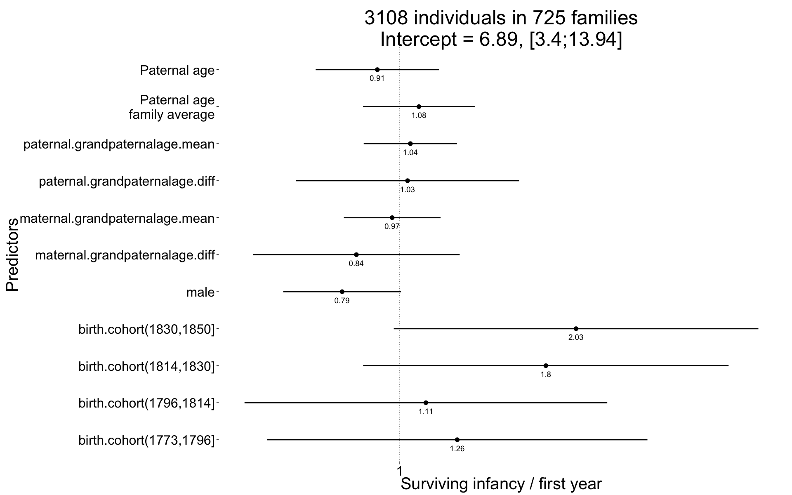
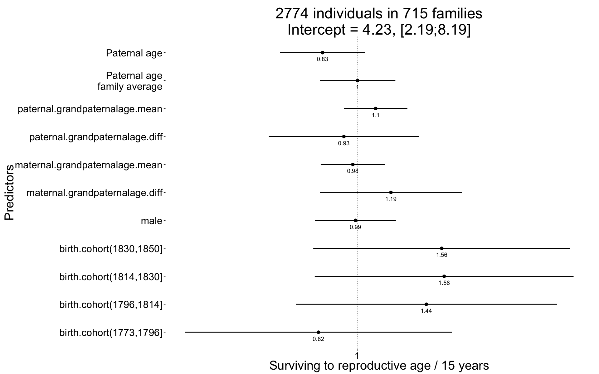
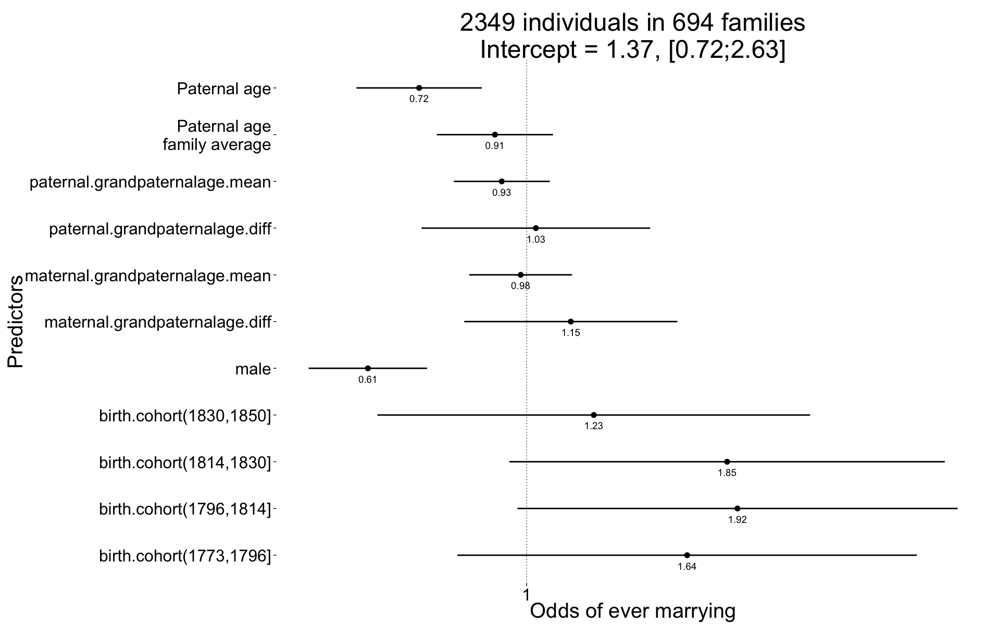
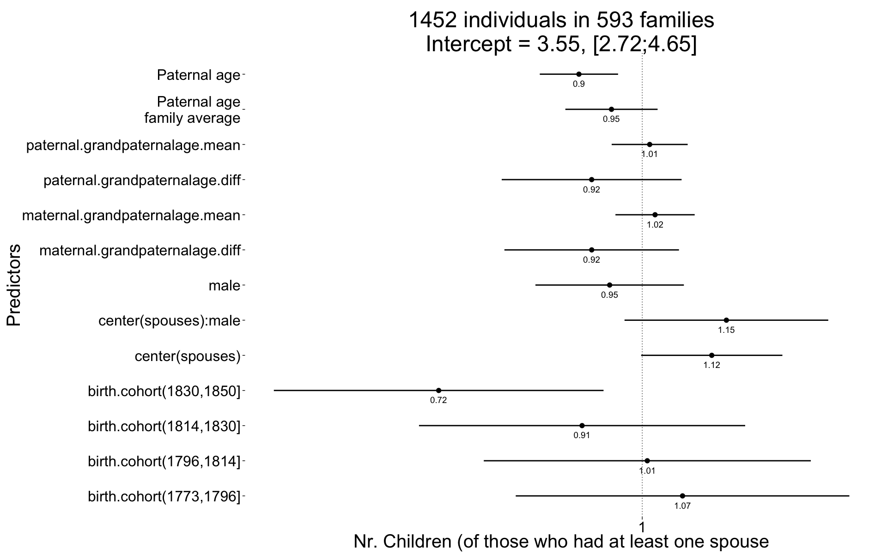
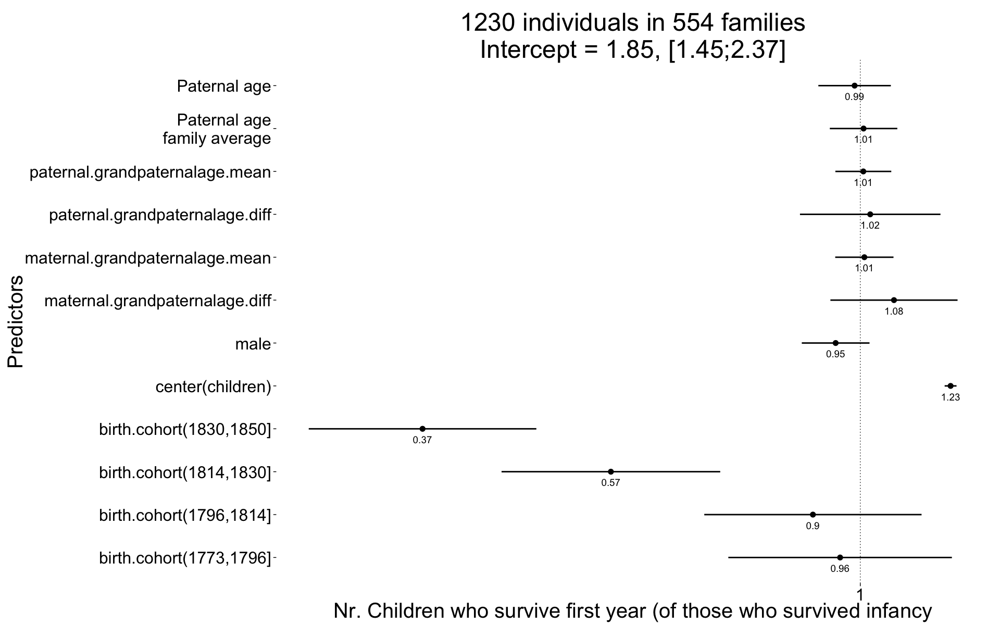
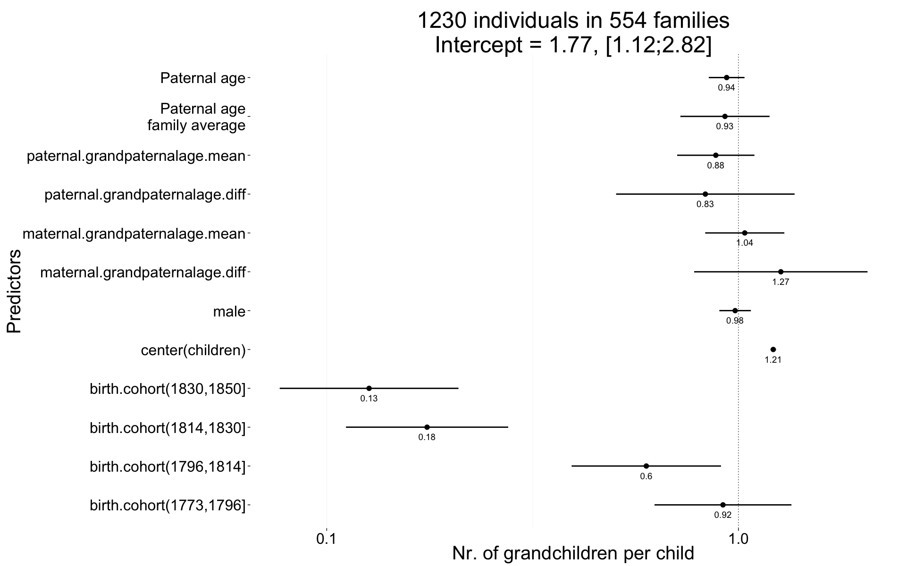
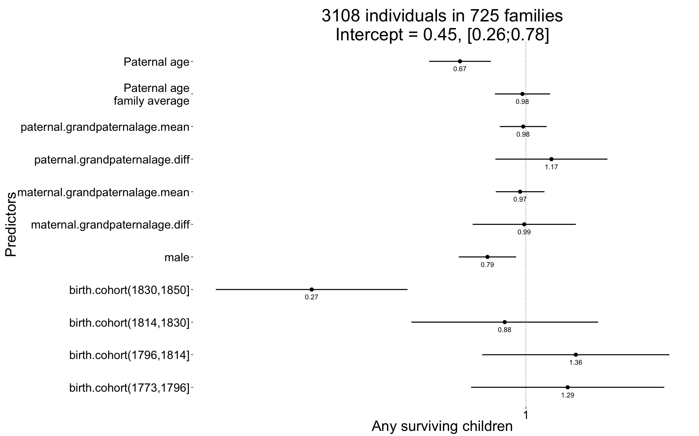

library(data.table); library(ggplot2); library(knitr); library(lme4);
opts_chunk$set(warning=TRUE, cache=TRUE,tidy=FALSE,autodep=TRUE,dev=c('png','pdf'),fig.width=20,fig.height=12.5,out.width='1440px',out.height='900px',cache.extra=file.info('krmh.rdata')[, 'mtime'])
source("0__helpers.R")
load("krmh.rdata")
krmh[,idPaternalGrandparents := paste(idPaternalGrandfather, idPaternalGrandmother)]
krmh[,idMaternalGrandparents := paste(idMaternalGrandfather, idMaternalGrandmother)]
krmh = recenter.pat(krmh, what = "paternal.grandpaternalage", among_who = "idPaternalGrandparents")
krmh = recenter.pat(krmh, what = "maternal.grandpaternalage", among_who = "idMaternalGrandparents")
krmh.with.paternalage = subset(krmh, subset = !is.na(paternalage) )
krmh.fm = subset(krmh.with.paternalage, subset = ehebekannt==TRUE) # krmh.fm contains only those were we know how the marriage ended
krmh.1 = krmh.fm[geburtsjahrK>=1720 & geburtsjahrK<=1850, ]
(quintiles = quantile(krmh.1$byear, seq(0,1,by=0.2)))## 0% 20% 40% 60% 80% 100%
## 1720 1773 1796 1814 1830 1850quintiles[1]=quintiles[1]-1
krmh.1[, birth.cohort := cut(byear,breaks = quintiles,dig.lab = 10)]The krmh.1 dataset contains only those participants where paternal age is known, the birthdate is between 1720 and 1850 and the marriage is known (meaning we know when it started and how it ended by spousal death). In known marriages we can assume that missing death dates for the kids mean that they migrated out.
All of the following models have the following in common:
Bobyqa is fairly robust to convergence failures. In addition to using Bobyqa, we center some variables that otherwise lead to large eigenvalues.
control_defaults = glmerControl(optimizer = "bobyqa")We control for birth.cohort (birth years in five equally large bins), male sex.
We added random intercepts for each family (father-mother dyad). We then controlled for the average paternal age in the family. Hence, the paternal age effects in the plot are split into those between families and those within families or between siblings. The relevant effect for our hypothesized mechanism, de novo mutations, is paternal age between siblings.
Here, episodes of selection refers to survival, mating success, reproductive success. To steer clear of sacrificial pseudo-replication, we make sure that each effect cannot be explained by the episode of selection preceding it. At its simplest, we check for effect on survival to reproduction only among those who lived to their first birthday. In later models, we look for an effect on number of children only among those who married and control their number of spouses.
Survive_infancy = glmer(
survive1y ~ birth.cohort + male + paternalage.mean + paternalage.diff + maternal.grandpaternalage.diff + maternal.grandpaternalage.mean + paternal.grandpaternalage.diff + paternal.grandpaternalage.mean + (1|idParents) + (1|idPaternalGrandparents) + (1|idMaternalGrandparents),
data= krmh.1, control = control_defaults,
family='binomial' )
summary(Survive_infancy)## Generalized linear mixed model fit by maximum likelihood (Laplace
## Approximation) [glmerMod]
## Family: binomial ( logit )
## Formula:
## survive1y ~ birth.cohort + male + paternalage.mean + paternalage.diff +
## maternal.grandpaternalage.diff + maternal.grandpaternalage.mean +
## paternal.grandpaternalage.diff + paternal.grandpaternalage.mean +
## (1 | idParents) + (1 | idPaternalGrandparents) + (1 | idMaternalGrandparents)
## Data: krmh.1
## Control: control_defaults
##
## AIC BIC logLik deviance df.resid
## 2117 2208 -1044 2087 3093
##
## Scaled residuals:
## Min 1Q Median 3Q Max
## -3.753 0.265 0.300 0.351 0.752
##
## Random effects:
## Groups Name Variance Std.Dev.
## idParents (Intercept) 0.000 0.000
## idMaternalGrandparents (Intercept) 0.308 0.555
## idPaternalGrandparents (Intercept) 0.000 0.000
## Number of obs: 3108, groups:
## idParents, 725; idMaternalGrandparents, 633; idPaternalGrandparents, 607
##
## Fixed effects:
## Estimate Std. Error z value Pr(>|z|)
## (Intercept) 1.9294 0.3599 5.36 0.000000083 ***
## birth.cohort(1773,1796] 0.2307 0.3895 0.59 0.554
## birth.cohort(1796,1814] 0.1049 0.3715 0.28 0.778
## birth.cohort(1814,1830] 0.5864 0.3743 1.57 0.117
## birth.cohort(1830,1850] 0.7078 0.3734 1.90 0.058 .
## male -0.2315 0.1205 -1.92 0.055 .
## paternalage.mean 0.0768 0.1144 0.67 0.502
## paternalage.diff -0.0899 0.1264 -0.71 0.477
## maternal.grandpaternalage.diff -0.1740 0.2115 -0.82 0.411
## maternal.grandpaternalage.mean -0.0304 0.0991 -0.31 0.759
## paternal.grandpaternalage.diff 0.0313 0.2285 0.14 0.891
## paternal.grandpaternalage.mean 0.0427 0.0956 0.45 0.655
## ---
## Signif. codes: 0 '***' 0.001 '**' 0.01 '*' 0.05 '.' 0.1 ' ' 1
##
## Correlation of Fixed Effects:
## (Intr) b.(177 b.(179 b.(181 b.(183 male ptrnlg.m
## b.(1773,179 -0.865
## b.(1796,181 -0.921 0.851
## b.(1814,183 -0.918 0.840 0.899
## b.(1830,185 -0.920 0.842 0.898 0.900
## male -0.179 -0.016 -0.014 -0.003 -0.013
## paternlg.mn 0.020 0.002 -0.010 0.008 -0.017 0.000
## patrnlg.dff 0.057 0.008 -0.026 -0.049 -0.082 -0.007 0.025
## mtrnl.grndptrnlg.d 0.022 -0.012 -0.033 -0.030 -0.006 0.004 0.007
## mtrnl.grndptrnlg.m -0.026 -0.005 0.009 0.018 0.032 -0.005 -0.097
## ptrnl.grndptrnlg.d 0.028 -0.015 -0.018 -0.011 -0.013 -0.014 0.027
## ptrnl.grndptrnlg.m 0.089 -0.063 -0.075 -0.099 -0.103 -0.005 -0.064
## ptrnlg.d mtrnl.grndptrnlg.d mtrnl.grndptrnlg.m
## b.(1773,179
## b.(1796,181
## b.(1814,183
## b.(1830,185
## male
## paternlg.mn
## patrnlg.dff
## mtrnl.grndptrnlg.d -0.017
## mtrnl.grndptrnlg.m -0.020 0.002
## ptrnl.grndptrnlg.d -0.007 -0.003 -0.022
## ptrnl.grndptrnlg.m 0.022 -0.013 -0.031
## ptrnl.grndptrnlg.d
## b.(1773,179
## b.(1796,181
## b.(1814,183
## b.(1830,185
## male
## paternlg.mn
## patrnlg.dff
## mtrnl.grndptrnlg.d
## mtrnl.grndptrnlg.m
## ptrnl.grndptrnlg.d
## ptrnl.grndptrnlg.m 0.020Survive_infancy_coefs = fortify_mine(Survive_infancy)
plot_fortified_mer(Survive_infancy_coefs, "Surviving infancy / first year")
Survive_reproductive = glmer(
surviveR ~ birth.cohort + male + paternalage.mean + paternalage.diff + maternal.grandpaternalage.diff + maternal.grandpaternalage.mean + paternal.grandpaternalage.diff + paternal.grandpaternalage.mean + (1|idParents) + (1|idPaternalGrandparents) + (1|idMaternalGrandparents),
data= krmh.1, subset = survive1y == TRUE, control = control_defaults,
family='binomial')
summary(Survive_reproductive)## Generalized linear mixed model fit by maximum likelihood (Laplace
## Approximation) [glmerMod]
## Family: binomial ( logit )
## Formula:
## surviveR ~ birth.cohort + male + paternalage.mean + paternalage.diff +
## maternal.grandpaternalage.diff + maternal.grandpaternalage.mean +
## paternal.grandpaternalage.diff + paternal.grandpaternalage.mean +
## (1 | idParents) + (1 | idPaternalGrandparents) + (1 | idMaternalGrandparents)
## Data: krmh.1
## Control: control_defaults
## Subset: survive1y == TRUE
##
## AIC BIC logLik deviance df.resid
## 2379 2468 -1174 2349 2759
##
## Scaled residuals:
## Min 1Q Median 3Q Max
## -2.976 0.354 0.383 0.417 0.719
##
## Random effects:
## Groups Name Variance Std.Dev.
## idParents (Intercept) 0.000000016 0.000126
## idMaternalGrandparents (Intercept) 0.065207422 0.255357
## idPaternalGrandparents (Intercept) 0.113930143 0.337535
## Number of obs: 2774, groups:
## idParents, 715; idMaternalGrandparents, 625; idPaternalGrandparents, 600
##
## Fixed effects:
## Estimate Std. Error z value Pr(>|z|)
## (Intercept) 1.44320 0.33634 4.29 0.000018 ***
## birth.cohort(1773,1796] -0.20351 0.35745 -0.57 0.57
## birth.cohort(1796,1814] 0.36277 0.34962 1.04 0.30
## birth.cohort(1814,1830] 0.45616 0.34651 1.32 0.19
## birth.cohort(1830,1850] 0.44356 0.34402 1.29 0.20
## male -0.00912 0.10822 -0.08 0.93
## paternalage.mean 0.00189 0.10114 0.02 0.99
## paternalage.diff -0.18168 0.11408 -1.59 0.11
## maternal.grandpaternalage.diff 0.17689 0.19009 0.93 0.35
## maternal.grandpaternalage.mean -0.02295 0.08609 -0.27 0.79
## paternal.grandpaternalage.diff -0.06990 0.20094 -0.35 0.73
## paternal.grandpaternalage.mean 0.09699 0.08482 1.14 0.25
## ---
## Signif. codes: 0 '***' 0.001 '**' 0.01 '*' 0.05 '.' 0.1 ' ' 1
##
## Correlation of Fixed Effects:
## (Intr) b.(177 b.(179 b.(181 b.(183 male ptrnlg.m
## b.(1773,179 -0.891
## b.(1796,181 -0.917 0.859
## b.(1814,183 -0.933 0.865 0.894
## b.(1830,185 -0.939 0.872 0.899 0.913
## male -0.144 -0.028 -0.027 -0.015 -0.023
## paternlg.mn 0.009 -0.002 -0.015 0.001 -0.019 -0.009
## patrnlg.dff 0.046 0.008 -0.023 -0.048 -0.070 -0.016 0.024
## mtrnl.grndptrnlg.d 0.024 -0.003 -0.015 -0.012 0.013 0.000 0.022
## mtrnl.grndptrnlg.m -0.017 -0.009 -0.004 0.002 0.011 0.011 -0.064
## ptrnl.grndptrnlg.d 0.026 -0.022 -0.011 -0.015 -0.019 0.003 0.007
## ptrnl.grndptrnlg.m 0.099 -0.077 -0.084 -0.106 -0.115 -0.002 -0.054
## ptrnlg.d mtrnl.grndptrnlg.d mtrnl.grndptrnlg.m
## b.(1773,179
## b.(1796,181
## b.(1814,183
## b.(1830,185
## male
## paternlg.mn
## patrnlg.dff
## mtrnl.grndptrnlg.d -0.023
## mtrnl.grndptrnlg.m -0.015 0.019
## ptrnl.grndptrnlg.d 0.000 0.002 -0.004
## ptrnl.grndptrnlg.m 0.016 -0.015 -0.035
## ptrnl.grndptrnlg.d
## b.(1773,179
## b.(1796,181
## b.(1814,183
## b.(1830,185
## male
## paternlg.mn
## patrnlg.dff
## mtrnl.grndptrnlg.d
## mtrnl.grndptrnlg.m
## ptrnl.grndptrnlg.d
## ptrnl.grndptrnlg.m 0.029Survive_reproductive_coefs = fortify_mine(Survive_reproductive)
plot_fortified_mer(Survive_reproductive_coefs, "Surviving to reproductive age / 15 years")
Ever_married <- glmer(
ever_married ~ birth.cohort + male + paternalage.mean + paternalage.diff + maternal.grandpaternalage.diff + maternal.grandpaternalage.mean + paternal.grandpaternalage.diff + paternal.grandpaternalage.mean + (1|idParents) + (1|idPaternalGrandparents) + (1|idMaternalGrandparents),
data= krmh.1, subset = surviveR == T, control = control_defaults,
family='binomial' )
summary(Ever_married)## Generalized linear mixed model fit by maximum likelihood (Laplace
## Approximation) [glmerMod]
## Family: binomial ( logit )
## Formula:
## ever_married ~ birth.cohort + male + paternalage.mean + paternalage.diff +
## maternal.grandpaternalage.diff + maternal.grandpaternalage.mean +
## paternal.grandpaternalage.diff + paternal.grandpaternalage.mean +
## (1 | idParents) + (1 | idPaternalGrandparents) + (1 | idMaternalGrandparents)
## Data: krmh.1
## Control: control_defaults
## Subset: surviveR == T
##
## AIC BIC logLik deviance df.resid
## 3054 3140 -1512 3024 2334
##
## Scaled residuals:
## Min 1Q Median 3Q Max
## -2.234 -1.022 0.571 0.737 1.626
##
## Random effects:
## Groups Name Variance Std.Dev.
## idParents (Intercept) 0.00e+00 0.000000000
## idMaternalGrandparents (Intercept) 3.63e-01 0.602893283
## idPaternalGrandparents (Intercept) 1.42e-13 0.000000376
## Number of obs: 2349, groups:
## idParents, 694; idMaternalGrandparents, 611; idPaternalGrandparents, 583
##
## Fixed effects:
## Estimate Std. Error z value Pr(>|z|)
## (Intercept) 0.3175 0.3323 0.96 0.33940
## birth.cohort(1773,1796] 0.4946 0.3613 1.37 0.17098
## birth.cohort(1796,1814] 0.6499 0.3461 1.88 0.06039 .
## birth.cohort(1814,1830] 0.6178 0.3424 1.80 0.07119 .
## birth.cohort(1830,1850] 0.2069 0.3402 0.61 0.54310
## male -0.4892 0.0931 -5.26 0.00000015 ***
## paternalage.mean -0.0976 0.0913 -1.07 0.28507
## paternalage.diff -0.3313 0.0986 -3.36 0.00078 ***
## maternal.grandpaternalage.diff 0.1361 0.1676 0.81 0.41680
## maternal.grandpaternalage.mean -0.0184 0.0808 -0.23 0.81975
## paternal.grandpaternalage.diff 0.0286 0.1797 0.16 0.87373
## paternal.grandpaternalage.mean -0.0767 0.0754 -1.02 0.30950
## ---
## Signif. codes: 0 '***' 0.001 '**' 0.01 '*' 0.05 '.' 0.1 ' ' 1
##
## Correlation of Fixed Effects:
## (Intr) b.(177 b.(179 b.(181 b.(183 male ptrnlg.m
## b.(1773,179 -0.882
## b.(1796,181 -0.936 0.859
## b.(1814,183 -0.951 0.861 0.918
## b.(1830,185 -0.958 0.866 0.919 0.937
## male -0.135 -0.024 -0.024 -0.011 -0.015
## paternlg.mn 0.001 0.009 0.000 0.010 -0.010 0.007
## patrnlg.dff 0.044 0.013 -0.008 -0.040 -0.069 0.004 0.036
## mtrnl.grndptrnlg.d 0.019 -0.014 -0.022 -0.018 0.004 0.004 0.034
## mtrnl.grndptrnlg.m -0.017 -0.005 -0.010 0.003 0.007 0.017 -0.092
## ptrnl.grndptrnlg.d 0.035 -0.019 -0.021 -0.020 -0.019 -0.016 0.005
## ptrnl.grndptrnlg.m 0.084 -0.071 -0.070 -0.091 -0.101 -0.009 -0.063
## ptrnlg.d mtrnl.grndptrnlg.d mtrnl.grndptrnlg.m
## b.(1773,179
## b.(1796,181
## b.(1814,183
## b.(1830,185
## male
## paternlg.mn
## patrnlg.dff
## mtrnl.grndptrnlg.d -0.024
## mtrnl.grndptrnlg.m -0.015 0.014
## ptrnl.grndptrnlg.d -0.008 0.009 -0.027
## ptrnl.grndptrnlg.m 0.032 -0.021 -0.023
## ptrnl.grndptrnlg.d
## b.(1773,179
## b.(1796,181
## b.(1814,183
## b.(1830,185
## male
## paternlg.mn
## patrnlg.dff
## mtrnl.grndptrnlg.d
## mtrnl.grndptrnlg.m
## ptrnl.grndptrnlg.d
## ptrnl.grndptrnlg.m 0.023Ever_married_coefs = fortify_mine(Ever_married)
plot_fortified_mer(Ever_married_coefs, "Odds of ever marrying")
Children <- glmer(
children ~ center(spouses)*male + birth.cohort + male + paternalage.mean + paternalage.diff + maternal.grandpaternalage.diff + maternal.grandpaternalage.mean + paternal.grandpaternalage.diff + paternal.grandpaternalage.mean + (1|idParents) + (1|idPaternalGrandparents) + (1|idMaternalGrandparents),
data= krmh.1, subset = spouses > 0, control = control_defaults,
family='poisson' )
summary(Children)## Generalized linear mixed model fit by maximum likelihood (Laplace
## Approximation) [glmerMod]
## Family: poisson ( log )
## Formula:
## children ~ center(spouses) * male + birth.cohort + male + paternalage.mean +
## paternalage.diff + maternal.grandpaternalage.diff + maternal.grandpaternalage.mean +
## paternal.grandpaternalage.diff + paternal.grandpaternalage.mean +
## (1 | idParents) + (1 | idPaternalGrandparents) + (1 | idMaternalGrandparents)
## Data: krmh.1
## Control: control_defaults
## Subset: spouses > 0
##
## AIC BIC logLik deviance df.resid
## 7260 7350 -3613 7226 1435
##
## Scaled residuals:
## Min 1Q Median 3Q Max
## -2.334 -1.010 -0.121 0.832 4.917
##
## Random effects:
## Groups Name Variance Std.Dev.
## idParents (Intercept) 0.12407 0.3522
## idMaternalGrandparents (Intercept) 0.00000 0.0000
## idPaternalGrandparents (Intercept) 0.00469 0.0685
## Number of obs: 1452, groups:
## idParents, 593; idMaternalGrandparents, 531; idPaternalGrandparents, 510
##
## Fixed effects:
## Estimate Std. Error z value Pr(>|z|)
## (Intercept) 1.26761 0.13704 9.25 <2e-16 ***
## center(spouses) 0.11205 0.05807 1.93 0.0537 .
## male -0.05252 0.06103 -0.86 0.3895
## birth.cohort(1773,1796] 0.06496 0.13717 0.47 0.6358
## birth.cohort(1796,1814] 0.00817 0.13447 0.06 0.9516
## birth.cohort(1814,1830] -0.09696 0.13411 -0.72 0.4697
## birth.cohort(1830,1850] -0.32805 0.13556 -2.42 0.0155 *
## paternalage.mean -0.04957 0.03793 -1.31 0.1912
## paternalage.diff -0.10204 0.03218 -3.17 0.0015 **
## maternal.grandpaternalage.diff -0.08146 0.07176 -1.14 0.2563
## maternal.grandpaternalage.mean 0.02067 0.03259 0.63 0.5259
## paternal.grandpaternalage.diff -0.08153 0.07397 -1.10 0.2703
## paternal.grandpaternalage.mean 0.01200 0.03125 0.38 0.7011
## center(spouses):male 0.13565 0.08378 1.62 0.1054
## ---
## Signif. codes: 0 '***' 0.001 '**' 0.01 '*' 0.05 '.' 0.1 ' ' 1
##
## Correlation of Fixed Effects:
## (Intr) cntr() male b.(177 b.(179 b.(181 b.(183
## centr(spss) -0.286
## male -0.206 0.612
## b.(1773,179 -0.866 -0.002 -0.020
## b.(1796,181 -0.915 0.012 -0.023 0.897
## b.(1814,183 -0.930 0.027 0.000 0.888 0.945
## b.(1830,185 -0.923 0.019 -0.016 0.877 0.927 0.945
## paternlg.mn -0.008 0.046 0.052 0.016 0.008 0.010 0.002
## patrnlg.dff 0.081 0.001 -0.010 0.014 -0.022 -0.063 -0.111
## mtrnl.grndptrnlg.d 0.021 -0.021 -0.034 -0.009 -0.017 -0.016 0.002
## mtrnl.grndptrnlg.m -0.027 0.000 0.017 -0.002 -0.002 0.005 0.011
## ptrnl.grndptrnlg.d 0.035 -0.022 -0.019 -0.022 -0.022 -0.018 -0.007
## ptrnl.grndptrnlg.m 0.091 -0.040 -0.017 -0.066 -0.076 -0.089 -0.098
## cntr(spss): 0.175 -0.700 -0.864 0.016 0.018 0.005 0.019
## ptrnlg.m ptrnlg.d mtrnl.grndptrnlg.d mtrnl.grndptrnlg.m
## centr(spss)
## male
## b.(1773,179
## b.(1796,181
## b.(1814,183
## b.(1830,185
## paternlg.mn
## patrnlg.dff 0.037
## mtrnl.grndptrnlg.d 0.028 -0.002
## mtrnl.grndptrnlg.m -0.087 -0.024 0.012
## ptrnl.grndptrnlg.d -0.032 -0.010 -0.011 -0.048
## ptrnl.grndptrnlg.m -0.024 0.018 -0.049 -0.046
## cntr(spss): -0.064 0.014 0.053 0.014
## ptrnl.grndptrnlg.d ptrnl.grndptrnlg.m
## centr(spss)
## male
## b.(1773,179
## b.(1796,181
## b.(1814,183
## b.(1830,185
## paternlg.mn
## patrnlg.dff
## mtrnl.grndptrnlg.d
## mtrnl.grndptrnlg.m
## ptrnl.grndptrnlg.d
## ptrnl.grndptrnlg.m 0.038
## cntr(spss): 0.013 0.017Children_coefs = fortify_mine(Children)
plot_fortified_mer(Children_coefs, "Nr. Children (of those who had at least one spouse")
Children.surviving1y <- glmer(
children.surviving1y ~ center(children) + birth.cohort + male + paternalage.mean + paternalage.diff + maternal.grandpaternalage.diff + maternal.grandpaternalage.mean + paternal.grandpaternalage.diff + paternal.grandpaternalage.mean + (1|idParents) + (1|idPaternalGrandparents) + (1|idMaternalGrandparents),
data= krmh.1, subset = children > 0, control = control_defaults,
family='poisson' )
summary(Children.surviving1y)## Generalized linear mixed model fit by maximum likelihood (Laplace
## Approximation) [glmerMod]
## Family: poisson ( log )
## Formula: children.surviving1y ~ center(children) + birth.cohort + male +
## paternalage.mean + paternalage.diff + maternal.grandpaternalage.diff +
## maternal.grandpaternalage.mean + paternal.grandpaternalage.diff +
## paternal.grandpaternalage.mean + (1 | idParents) + (1 | idPaternalGrandparents) +
## (1 | idMaternalGrandparents)
## Data: krmh.1
## Control: control_defaults
## Subset: children > 0
##
## AIC BIC logLik deviance df.resid
## 4270 4351 -2119 4238 1214
##
## Scaled residuals:
## Min 1Q Median 3Q Max
## -2.408 -0.827 -0.102 0.580 3.470
##
## Random effects:
## Groups Name Variance Std.Dev.
## idParents (Intercept) 0.0000 0.000
## idMaternalGrandparents (Intercept) 0.0359 0.190
## idPaternalGrandparents (Intercept) 0.0158 0.126
## Number of obs: 1230, groups:
## idParents, 554; idMaternalGrandparents, 500; idPaternalGrandparents, 480
##
## Fixed effects:
## Estimate Std. Error z value Pr(>|z|)
## (Intercept) 0.61598 0.12598 4.89 1.0e-06 ***
## center(children) 0.20575 0.00691 29.78 < 2e-16 ***
## birth.cohort(1773,1796] -0.04600 0.12994 -0.35 0.72
## birth.cohort(1796,1814] -0.10797 0.12631 -0.85 0.39
## birth.cohort(1814,1830] -0.56829 0.12711 -4.47 7.8e-06 ***
## birth.cohort(1830,1850] -0.99745 0.13231 -7.54 4.7e-14 ***
## male -0.05615 0.03937 -1.43 0.15
## paternalage.mean 0.00744 0.03923 0.19 0.85
## paternalage.diff -0.01298 0.04213 -0.31 0.76
## maternal.grandpaternalage.diff 0.07675 0.07391 1.04 0.30
## maternal.grandpaternalage.mean 0.00925 0.03388 0.27 0.78
## paternal.grandpaternalage.diff 0.02260 0.08167 0.28 0.78
## paternal.grandpaternalage.mean 0.00688 0.03250 0.21 0.83
## ---
## Signif. codes: 0 '***' 0.001 '**' 0.01 '*' 0.05 '.' 0.1 ' ' 1
##
## Correlation of Fixed Effects:
## (Intr) cntr() b.(177 b.(179 b.(181 b.(183 male
## cntr(chldr) -0.248
## b.(1773,179 -0.865 -0.012
## b.(1796,181 -0.908 -0.003 0.883
## b.(1814,183 -0.916 0.019 0.868 0.917
## b.(1830,185 -0.893 0.052 0.835 0.879 0.883
## male -0.130 0.023 -0.034 -0.033 -0.013 -0.009
## paternlg.mn -0.026 0.083 0.036 0.008 0.019 0.014 -0.005
## patrnlg.dff 0.077 0.057 0.007 -0.025 -0.065 -0.091 -0.024
## mtrnl.grndptrnlg.d 0.005 0.013 -0.002 -0.019 -0.011 0.001 0.019
## mtrnl.grndptrnlg.m -0.037 -0.034 0.005 0.012 0.015 0.018 0.058
## ptrnl.grndptrnlg.d 0.016 0.077 -0.015 -0.008 -0.020 0.000 0.013
## ptrnl.grndptrnlg.m 0.086 0.031 -0.088 -0.093 -0.101 -0.110 0.005
## ptrnlg.m ptrnlg.d mtrnl.grndptrnlg.d mtrnl.grndptrnlg.m
## cntr(chldr)
## b.(1773,179
## b.(1796,181
## b.(1814,183
## b.(1830,185
## male
## paternlg.mn
## patrnlg.dff 0.048
## mtrnl.grndptrnlg.d 0.016 0.017
## mtrnl.grndptrnlg.m -0.099 -0.044 0.025
## ptrnl.grndptrnlg.d -0.007 0.007 -0.034 -0.058
## ptrnl.grndptrnlg.m -0.036 -0.012 -0.090 -0.033
## ptrnl.grndptrnlg.d
## cntr(chldr)
## b.(1773,179
## b.(1796,181
## b.(1814,183
## b.(1830,185
## male
## paternlg.mn
## patrnlg.dff
## mtrnl.grndptrnlg.d
## mtrnl.grndptrnlg.m
## ptrnl.grndptrnlg.d
## ptrnl.grndptrnlg.m 0.020Children.surviving1y_coefs = fortify_mine(Children.surviving1y)
plot_fortified_mer(Children.surviving1y_coefs, "Nr. Children who survive first year (of those who survived infancy")
Grandchildren.per.Child <- glmer(
grandchildren ~ center(children) + birth.cohort + male + paternalage.mean + paternalage.diff + maternal.grandpaternalage.diff + maternal.grandpaternalage.mean + paternal.grandpaternalage.diff + paternal.grandpaternalage.mean + (1|idParents) + (1|idPaternalGrandparents) + (1|idMaternalGrandparents),
data= krmh.1, subset = children > 0,
family = "poisson", control = control_defaults )
summary(Grandchildren.per.Child)## Generalized linear mixed model fit by maximum likelihood (Laplace
## Approximation) [glmerMod]
## Family: poisson ( log )
## Formula:
## grandchildren ~ center(children) + birth.cohort + male + paternalage.mean +
## paternalage.diff + maternal.grandpaternalage.diff + maternal.grandpaternalage.mean +
## paternal.grandpaternalage.diff + paternal.grandpaternalage.mean +
## (1 | idParents) + (1 | idPaternalGrandparents) + (1 | idMaternalGrandparents)
## Data: krmh.1
## Control: control_defaults
## Subset: children > 0
##
## AIC BIC logLik deviance df.resid
## 5840 5922 -2904 5808 1214
##
## Scaled residuals:
## Min 1Q Median 3Q Max
## -4.175 -0.672 -0.409 0.178 13.716
##
## Random effects:
## Groups Name Variance Std.Dev.
## idParents (Intercept) 1.5771 1.256
## idMaternalGrandparents (Intercept) 0.0743 0.273
## idPaternalGrandparents (Intercept) 0.3863 0.622
## Number of obs: 1230, groups:
## idParents, 554; idMaternalGrandparents, 500; idPaternalGrandparents, 480
##
## Fixed effects:
## Estimate Std. Error z value Pr(>|z|)
## (Intercept) 0.57251 0.23608 2.43 0.015 *
## center(children) 0.19446 0.00784 24.79 < 2e-16 ***
## birth.cohort(1773,1796] -0.08662 0.19535 -0.44 0.657
## birth.cohort(1796,1814] -0.51540 0.21310 -2.42 0.016 *
## birth.cohort(1814,1830] -1.74135 0.23144 -7.52 5.3e-14 ***
## birth.cohort(1830,1850] -2.06562 0.25502 -8.10 5.5e-16 ***
## male -0.01870 0.04499 -0.42 0.678
## paternalage.mean -0.07556 0.12718 -0.59 0.552
## paternalage.diff -0.06610 0.05095 -1.30 0.195
## maternal.grandpaternalage.diff 0.23695 0.24738 0.96 0.338
## maternal.grandpaternalage.mean 0.03519 0.11290 0.31 0.755
## paternal.grandpaternalage.diff -0.18520 0.25455 -0.73 0.467
## paternal.grandpaternalage.mean -0.12677 0.11025 -1.15 0.250
## ---
## Signif. codes: 0 '***' 0.001 '**' 0.01 '*' 0.05 '.' 0.1 ' ' 1
##
## Correlation of Fixed Effects:
## (Intr) cntr() b.(177 b.(179 b.(181 b.(183 male
## cntr(chldr) -0.087
## b.(1773,179 -0.806 -0.007
## b.(1796,181 -0.876 -0.026 0.913
## b.(1814,183 -0.895 -0.030 0.845 0.934
## b.(1830,185 -0.870 -0.035 0.773 0.860 0.909
## male -0.088 0.029 -0.041 -0.021 0.018 -0.009
## paternlg.mn 0.057 0.024 -0.002 -0.018 -0.024 -0.031 -0.005
## patrnlg.dff 0.348 0.049 -0.124 -0.269 -0.367 -0.425 -0.041
## mtrnl.grndptrnlg.d -0.011 0.012 0.003 0.007 0.016 0.026 0.003
## mtrnl.grndptrnlg.m -0.047 -0.014 0.005 0.009 0.013 0.017 0.027
## ptrnl.grndptrnlg.d 0.045 0.011 -0.011 -0.013 -0.013 -0.002 -0.012
## ptrnl.grndptrnlg.m 0.066 0.013 -0.045 -0.056 -0.066 -0.066 0.002
## ptrnlg.m ptrnlg.d mtrnl.grndptrnlg.d mtrnl.grndptrnlg.m
## cntr(chldr)
## b.(1773,179
## b.(1796,181
## b.(1814,183
## b.(1830,185
## male
## paternlg.mn
## patrnlg.dff 0.046
## mtrnl.grndptrnlg.d -0.013 -0.016
## mtrnl.grndptrnlg.m -0.113 -0.023 0.011
## ptrnl.grndptrnlg.d -0.016 -0.003 -0.050 -0.019
## ptrnl.grndptrnlg.m -0.016 0.030 -0.063 -0.085
## ptrnl.grndptrnlg.d
## cntr(chldr)
## b.(1773,179
## b.(1796,181
## b.(1814,183
## b.(1830,185
## male
## paternlg.mn
## patrnlg.dff
## mtrnl.grndptrnlg.d
## mtrnl.grndptrnlg.m
## ptrnl.grndptrnlg.d
## ptrnl.grndptrnlg.m 0.047Grandchildren.per.Child_coefs = fortify_mine(Grandchildren.per.Child)
plot_fortified_mer(Grandchildren.per.Child_coefs, "Nr. of grandchildren per child")
Any_surviving_children <- glmer(
any_surviving_children ~ birth.cohort + male + paternalage.mean + paternalage.diff + maternal.grandpaternalage.diff + maternal.grandpaternalage.mean + paternal.grandpaternalage.diff + paternal.grandpaternalage.mean + (1|idParents) + (1|idPaternalGrandparents) + (1|idMaternalGrandparents),
data= krmh.1,
family = 'binomial', control = control_defaults )
summary(Any_surviving_children)## Generalized linear mixed model fit by maximum likelihood (Laplace
## Approximation) [glmerMod]
## Family: binomial ( logit )
## Formula:
## any_surviving_children ~ birth.cohort + male + paternalage.mean +
## paternalage.diff + maternal.grandpaternalage.diff + maternal.grandpaternalage.mean +
## paternal.grandpaternalage.diff + paternal.grandpaternalage.mean +
## (1 | idParents) + (1 | idPaternalGrandparents) + (1 | idMaternalGrandparents)
## Data: krmh.1
## Control: control_defaults
##
## AIC BIC logLik deviance df.resid
## 3234 3325 -1602 3204 3093
##
## Scaled residuals:
## Min 1Q Median 3Q Max
## -1.100 -0.621 -0.354 -0.225 3.910
##
## Random effects:
## Groups Name Variance Std.Dev.
## idParents (Intercept) 1.21e-10 0.0000109812
## idMaternalGrandparents (Intercept) 2.49e-01 0.4988403991
## idPaternalGrandparents (Intercept) 8.60e-15 0.0000000928
## Number of obs: 3108, groups:
## idParents, 725; idMaternalGrandparents, 633; idPaternalGrandparents, 607
##
## Fixed effects:
## Estimate Std. Error z value Pr(>|z|)
## (Intercept) -0.8055 0.2853 -2.82 0.0048 **
## birth.cohort(1773,1796] 0.2580 0.3043 0.85 0.3965
## birth.cohort(1796,1814] 0.3082 0.2946 1.05 0.2956
## birth.cohort(1814,1830] -0.1309 0.2941 -0.45 0.6562
## birth.cohort(1830,1850] -1.3223 0.3021 -4.38 0.000012 ***
## male -0.2372 0.0903 -2.63 0.0086 **
## paternalage.mean -0.0212 0.0867 -0.24 0.8074
## paternalage.diff -0.4067 0.0972 -4.19 0.000028 ***
## maternal.grandpaternalage.diff -0.0101 0.1625 -0.06 0.9506
## maternal.grandpaternalage.mean -0.0355 0.0767 -0.46 0.6433
## paternal.grandpaternalage.diff 0.1577 0.1765 0.89 0.3716
## paternal.grandpaternalage.mean -0.0166 0.0739 -0.22 0.8220
## ---
## Signif. codes: 0 '***' 0.001 '**' 0.01 '*' 0.05 '.' 0.1 ' ' 1
##
## Correlation of Fixed Effects:
## (Intr) b.(177 b.(179 b.(181 b.(183 male ptrnlg.m
## b.(1773,179 -0.890
## b.(1796,181 -0.937 0.871
## b.(1814,183 -0.945 0.867 0.917
## b.(1830,185 -0.920 0.844 0.890 0.899
## male -0.152 -0.014 -0.012 0.003 0.002
## paternlg.mn 0.015 0.002 -0.012 0.004 -0.021 -0.005
## patrnlg.dff 0.074 0.003 -0.029 -0.054 -0.064 0.009 0.026
## mtrnl.grndptrnlg.d 0.025 -0.013 -0.031 -0.028 -0.006 0.005 0.005
## mtrnl.grndptrnlg.m -0.030 -0.001 0.004 0.011 0.021 0.011 -0.087
## ptrnl.grndptrnlg.d 0.031 -0.020 -0.020 -0.019 -0.021 -0.015 0.012
## ptrnl.grndptrnlg.m 0.093 -0.069 -0.077 -0.098 -0.104 -0.004 -0.045
## ptrnlg.d mtrnl.grndptrnlg.d mtrnl.grndptrnlg.m
## b.(1773,179
## b.(1796,181
## b.(1814,183
## b.(1830,185
## male
## paternlg.mn
## patrnlg.dff
## mtrnl.grndptrnlg.d -0.011
## mtrnl.grndptrnlg.m -0.014 0.016
## ptrnl.grndptrnlg.d -0.012 0.000 -0.012
## ptrnl.grndptrnlg.m 0.017 -0.027 -0.049
## ptrnl.grndptrnlg.d
## b.(1773,179
## b.(1796,181
## b.(1814,183
## b.(1830,185
## male
## paternlg.mn
## patrnlg.dff
## mtrnl.grndptrnlg.d
## mtrnl.grndptrnlg.m
## ptrnl.grndptrnlg.d
## ptrnl.grndptrnlg.m 0.027Any_surviving_children_coefs = fortify_mine(Any_surviving_children)
plot_fortified_mer(Any_surviving_children_coefs, "Any surviving children")
name = "krmh_grandparents"
save(list = lstype('confint.merMod'),file=paste0("coefs/",name,"_coefs.rdata"))
save(list = lstype(),file=paste0("coefs/",name,"_models.rdata"))sessionInfo()## R version 3.1.3 (2015-03-09)
## Platform: x86_64-apple-darwin13.4.0 (64-bit)
## Running under: OS X 10.10.2 (Yosemite)
##
## locale:
## [1] en_US.UTF-8/en_US.UTF-8/en_US.UTF-8/C/en_US.UTF-8/en_US.UTF-8
##
## attached base packages:
## [1] grid graphics grDevices utils datasets stats methods
## [8] base
##
## other attached packages:
## [1] MCMCglmm_2.22 ape_3.2 coda_0.17-1 pipeR_0.6
## [5] htmltools_0.2.6 XML_3.98-1.1 gridSVG_1.4-3 extrafont_0.17
## [9] lmerTest_2.0-20 blme_1.0-2 lme4_1.1-7 Rcpp_0.11.5
## [13] Matrix_1.1-5 zoo_1.7-11 foreign_0.8-63 mgcv_1.8-4
## [17] nlme_3.1-120 haven_0.1.1.9000 QuantPsyc_1.5 MASS_7.3-39
## [21] boot_1.3-15 psych_1.5.1 Hmisc_3.15-0 Formula_1.2-0
## [25] survival_2.38-1 lattice_0.20-30 reshape2_1.4.1 lubridate_1.3.3
## [29] car_2.0-25 stringi_0.4-1 dplyr_0.4.1 pander_0.5.2
## [33] knitr_1.9 rmarkdown_0.5.1 plyr_1.8.1 ggplot2_1.0.0
## [37] formr_0.1.11 data.table_1.9.5 stringr_0.6.2 devtools_1.7.0
##
## loaded via a namespace (and not attached):
## [1] acepack_1.3-3.3 assertthat_0.1 bitops_1.0-6
## [4] caTools_1.17.1 chron_2.3-45 cluster_2.0.1
## [7] codetools_0.2-10 colorspace_1.2-5 corpcor_1.6.7
## [10] cubature_1.1-2 DBI_0.3.1 digest_0.6.8
## [13] evaluate_0.5.5 extrafontdb_1.0 formatR_1.0
## [16] formula.tools_1.3.4 gdata_2.13.3 gplots_2.16.0
## [19] gtable_0.1.2 gtools_3.4.1 KernSmooth_2.23-14
## [22] labeling_0.3 latticeExtra_0.6-26 lazyeval_0.1.10
## [25] magrittr_1.5 memoise_0.2.1 minqa_1.2.4
## [28] mnormt_1.5-1 munsell_0.4.2 nloptr_1.0.4
## [31] nnet_7.3-9 numDeriv_2012.9-1 operator.tools_1.3.0
## [34] parallel_3.1.3 pbkrtest_0.4-2 proto_0.3-10
## [37] quantreg_5.11 RColorBrewer_1.1-2 RJSONIO_1.3-0
## [40] rpart_4.1-9 Rttf2pt1_1.3.3 scales_0.2.4
## [43] SparseM_1.6 splines_3.1.3 tcltk_3.1.3
## [46] tensorA_0.36 tools_3.1.3date()## [1] "Mon Mar 30 19:14:24 2015"